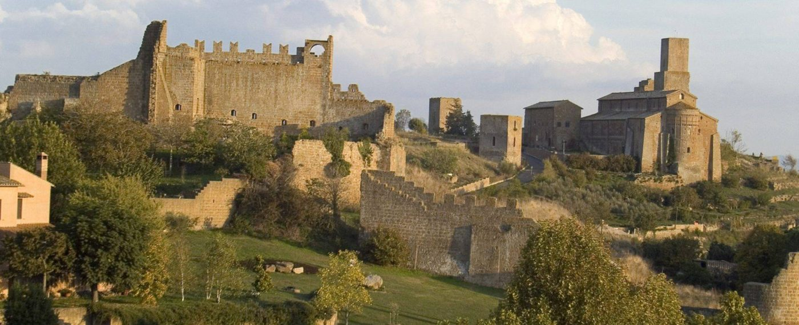
🏰
Palazzo dei Papi e Colle del Duomo
Il complesso monumentale più rappresentativo di Viterbo: Palazzo dei Papi, Cattedrale di San Lorenzo, Museo Colle del Duomo e scorci sulla valle di Faul.

Il complesso monumentale più rappresentativo di Viterbo: Palazzo dei Papi, Cattedrale di San Lorenzo, Museo Colle del Duomo e scorci sulla valle di Faul.
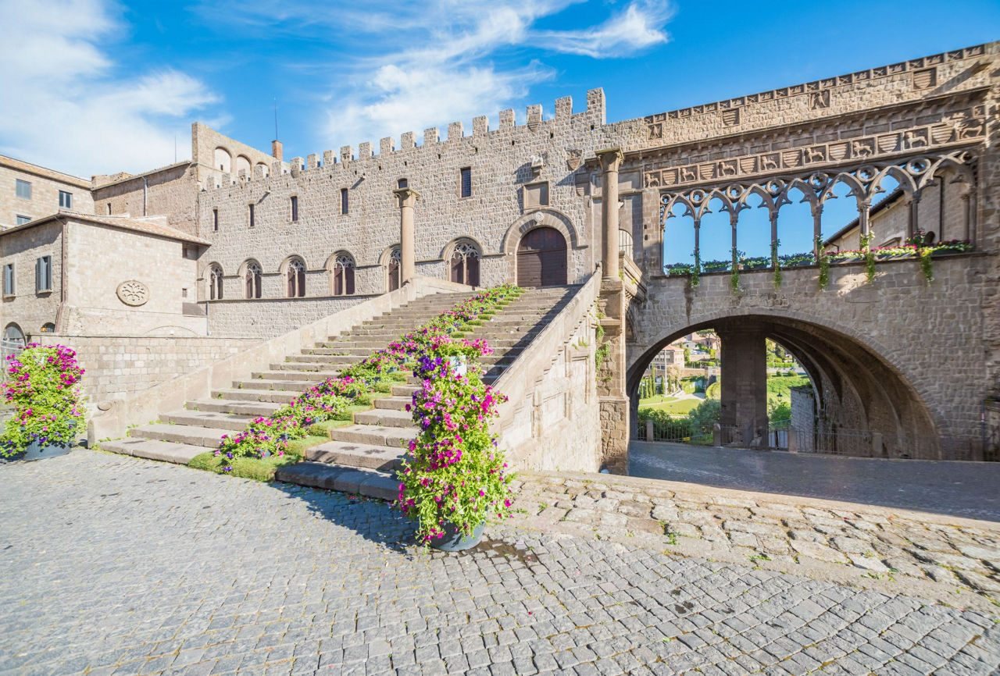
Vicoli, case a ponte, profferli e piazze raccolte: è il cuore medievale della città, molto adatto a una passeggiata fotografica.
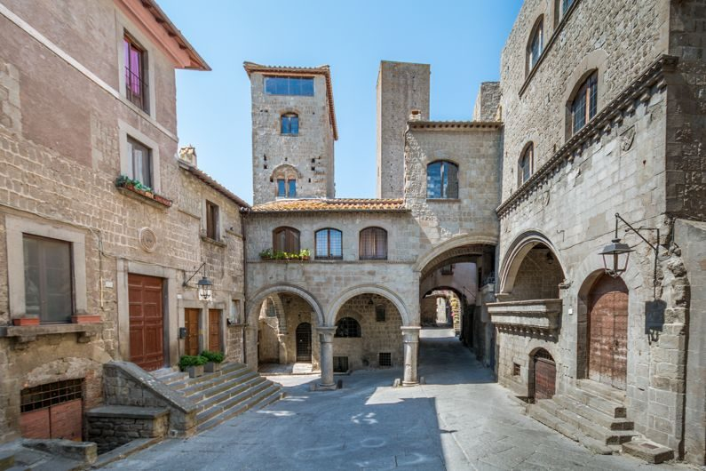
Il cuore civico di Viterbo, con Palazzo dei Priori e Palazzo del Podestà. Un buon punto di partenza per ogni itinerario nel centro storico.
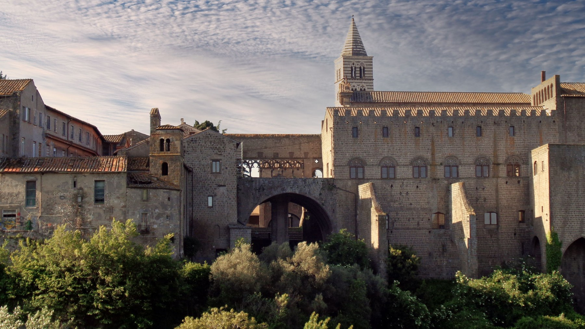
Per chi vuole entrare nei musei o costruire una visita più completa ai monumenti cittadini. Verificare orari e disponibilità prima della visita.
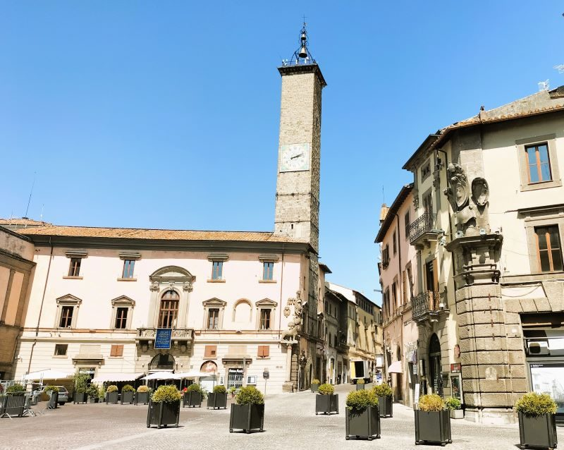
Esperienza termale distintiva di Viterbo, adatta soprattutto a chi resta dopo il workshop o vuole dedicare qualche ora al benessere.
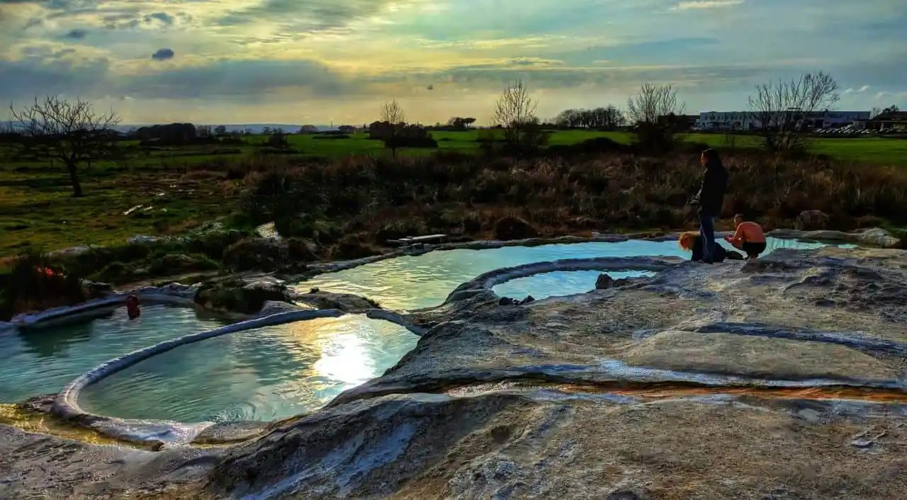
Struttura dell’Università della Tuscia dedicata a didattica, ricerca, conservazione e divulgazione: coerente con un pubblico universitario e scientifico.
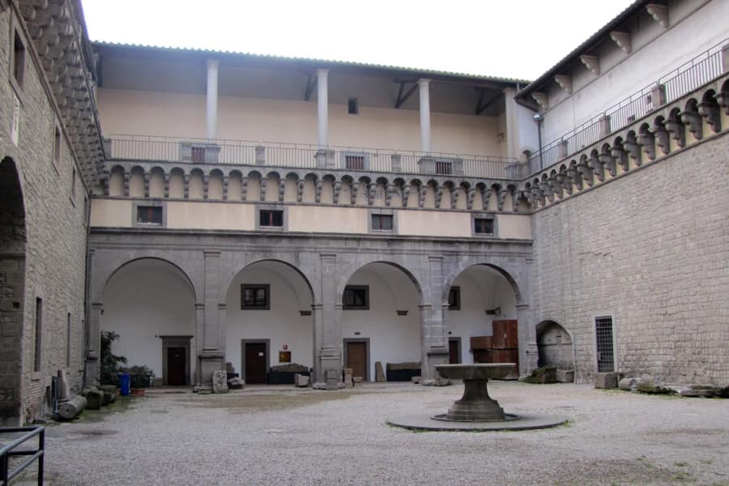
Sede istituzionale dell’Università degli Studi della Tuscia, in un complesso storico vicino al centro cittadino.
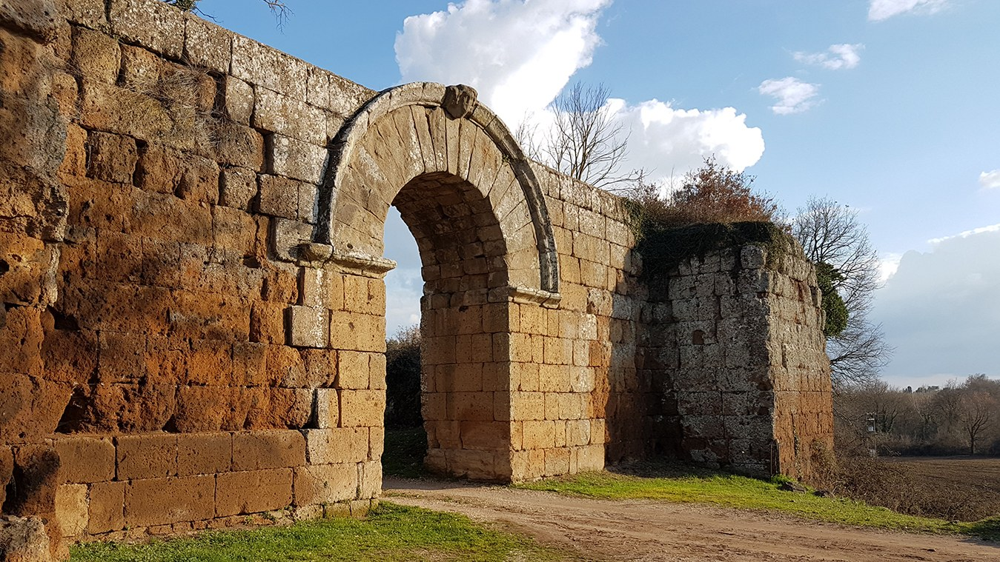
Un percorso libero tra chiese, chiostri e scorci del centro: Santa Maria Nuova, San Sisto, Santa Rosa e altri luoghi storici permettono di leggere la città oltre i monumenti principali.
Mete consigliate per chi dispone di mezza giornata, una giornata libera o un accompagnatore con auto.
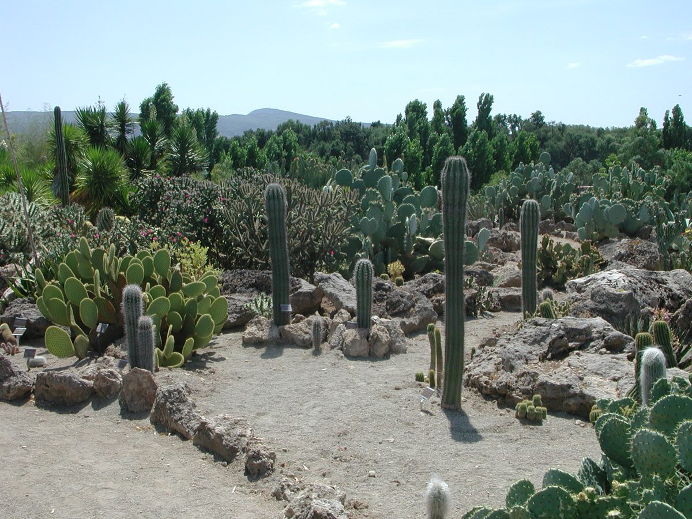
Una delle visite più eleganti vicino a Viterbo: giardini, fontane, geometrie verdi e architettura del paesaggio.
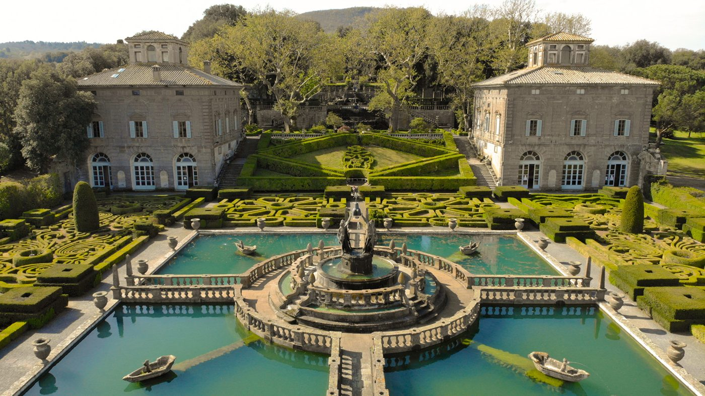
Un parco monumentale unico, con grandi sculture in peperino immerse nel bosco. Ottimo per una visita informale e memorabile.
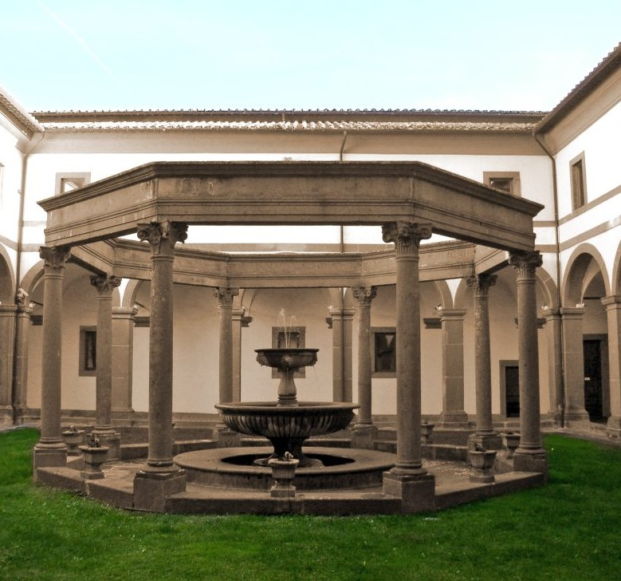
Area archeologica romana nei pressi di Civita Castellana, con mura antiche, porte monumentali e resti urbani immersi nel paesaggio della Tuscia.
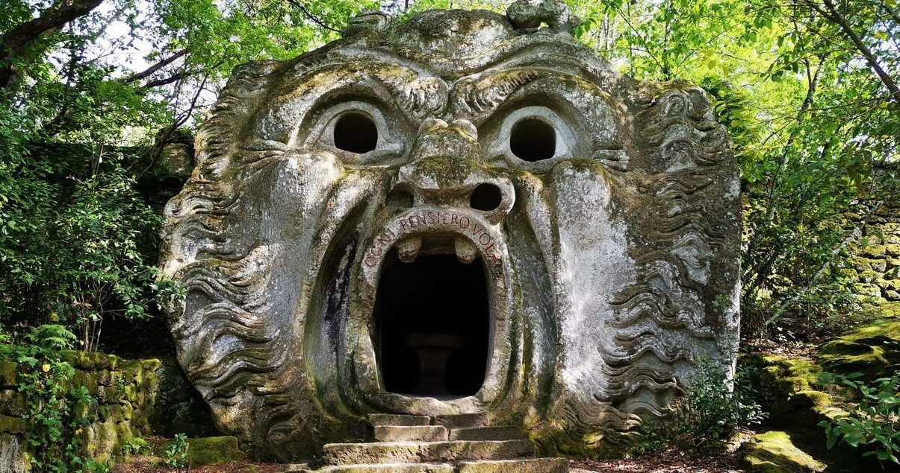
Borgo sospeso nella valle dei calanchi, raggiungibile a piedi tramite il ponte di accesso. Da programmare con tempi più larghi.
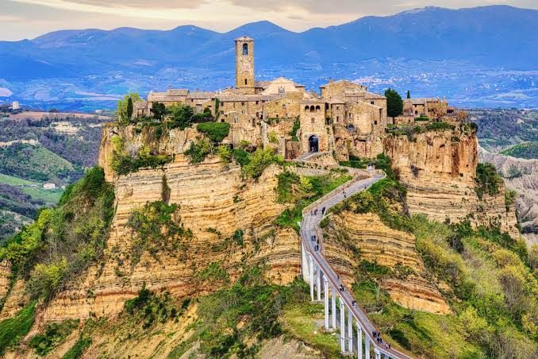
Grande residenza rinascimentale legata alla famiglia Farnese, tra architettura, affreschi e rapporto scenografico con il borgo.
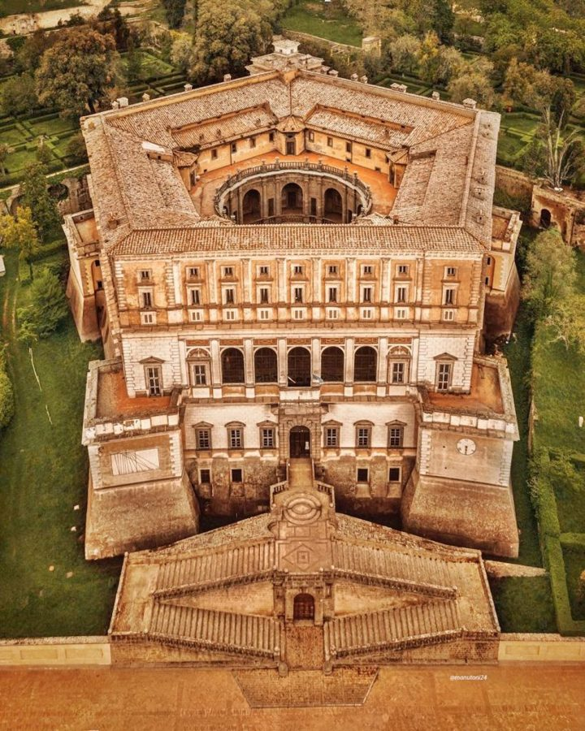
Opzione più paesaggistica: lago vulcanico, borghi, passeggiate e punti panoramici. Consigliata con auto e tempo stabile.
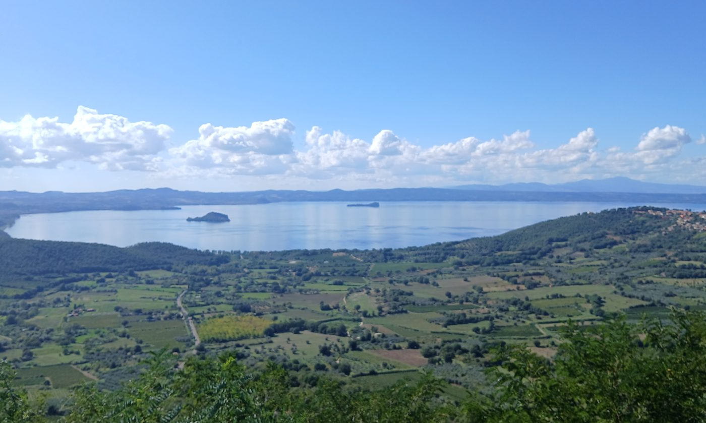
Per chi è interessato a paesaggio, archeologia e medioevo: Tuscania è più vicina; Tarquinia richiede più tempo ma offre la necropoli etrusca.
Spazio riservato alla mappa Google personalizzata. Inserire qui il link quando disponibile.